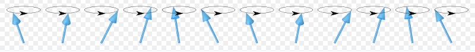
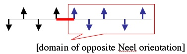
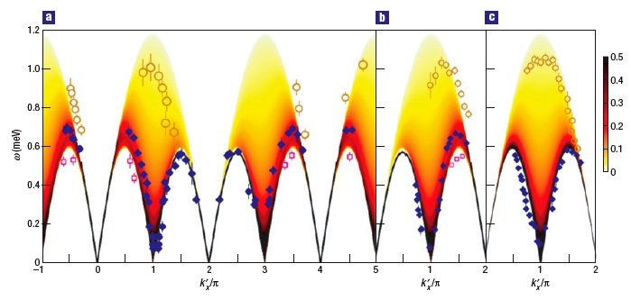
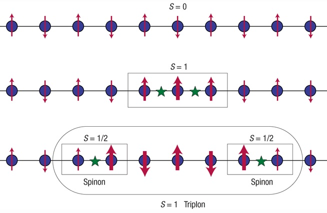

Elementary excitations of frustrated magnets
Elementary excitations above magnetically ordered state: spin waves (magnons).

Elementary excitations of critical Heisenberg chain: spin-1/2 spinons (domain walls). But they
can not propagate between chains individually.

Elementary excitations of spin chains coupled by frustrated inter-chain exchange: S=1
triplons (bound states of two spinons; no rotational symmetry breaking).
Spinons and triplons in spatially anisotropic frustrated antiferromagnets ,
M. Kohno, O.A. Starykh and L. Balents, Nature Physics 3 , 790-795 (2007).
Important technical details are in Supplementary material,
and arXiv:0706.2012

Cartoon of S=1 triplon. From R. McKenzie, Quantum many-body physics: 2D or not 2D?
(Nature Physics 3, 756 - 758 (2007):
